서점 유명 4대 교재 &
베리타스 오리지널 10개 전 시리즈 완벽 수록
대한민국 1위 능률보카, 리딩튜터 챌린저, 영국 옥스퍼드 3000/5000, 내셔널지오그래픽 Pathways까지.
시판 유명 베스트셀러뿐만 아니라 베리타스만의 특화된 10대 단어장 라인업으로 내신부터 수능, 영재 아카데믹까지 단 한 곳에서 완성합니다.
서점에서 검증된 유명 4대 교재 실물 라인업
NE능률 VOCA 시리즈 (중학 고난도 ~ 수능)
대한민국 어휘 1위 베스트셀러, 어원과 빈출 문맥으로 수능 1등급을 견인하는 대표 어휘서
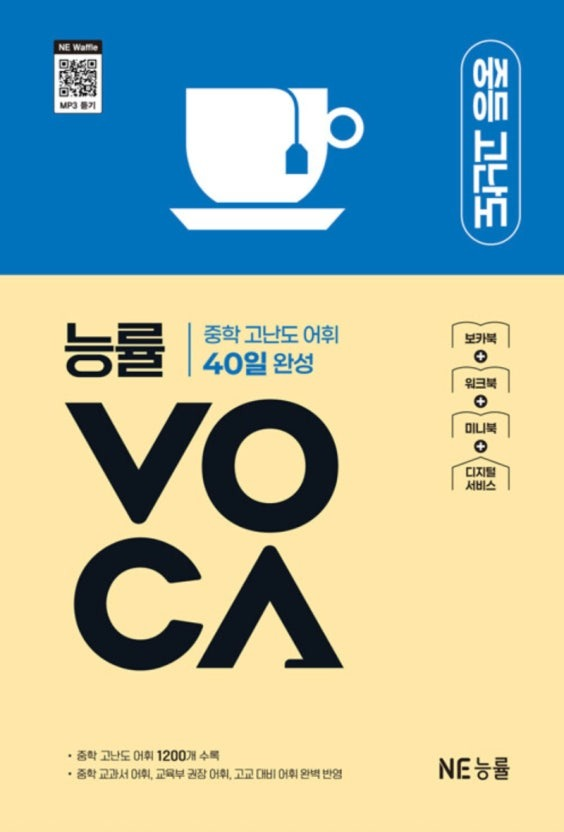
능률 중학 고난도
40일 완성 · 1,200단어
현재 수록 완료 ✓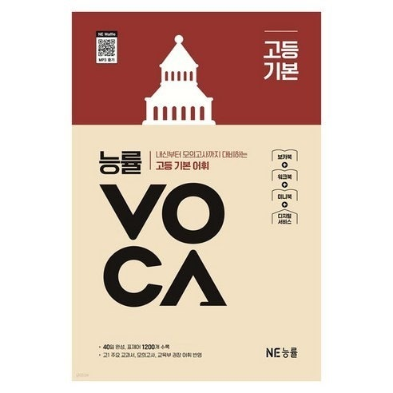
능률 고등 기본
40일 완성 · 1,200단어
추후 업데이트 예정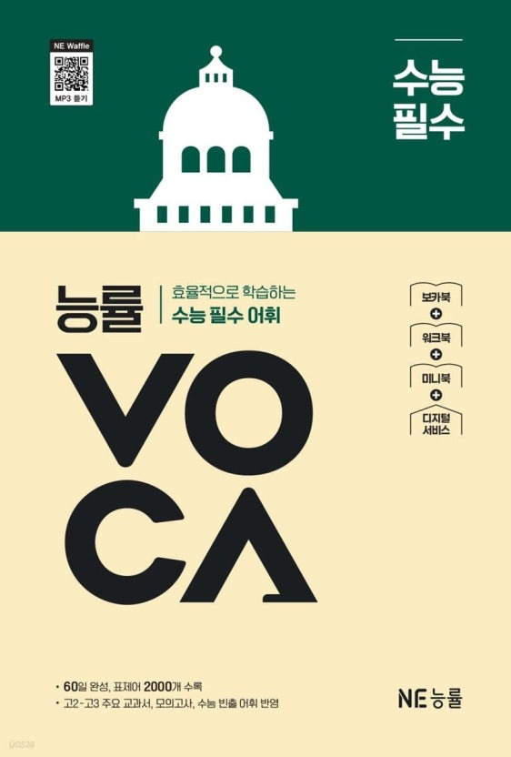
능률 수능 필수
60일 완성 · 2,000단어
추후 업데이트 예정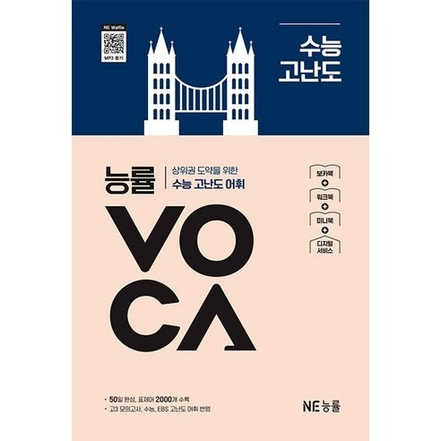
능률 수능 고난도
50일 완성 · 2,000단어
추후 업데이트 예정리딩튜터 챌린저 시리즈 (Challenger 1, 2, 3)
누적 판매 1,900만 부의 신화! 수능 프리뷰와 고난도 독해 연계 핵심 어휘 완벽 수록
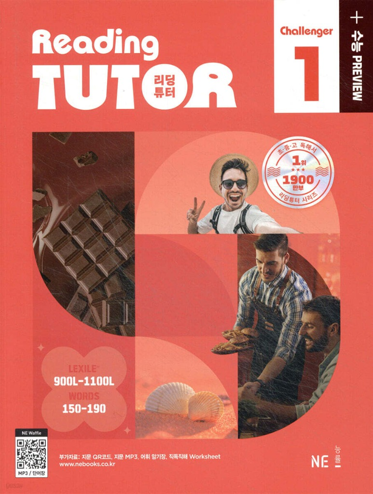
리딩튜터 챌린저 1
Lexile 900L ~ 1100L · 수능 입문 및 고1 모의 수준
현재 수록 완료 ✓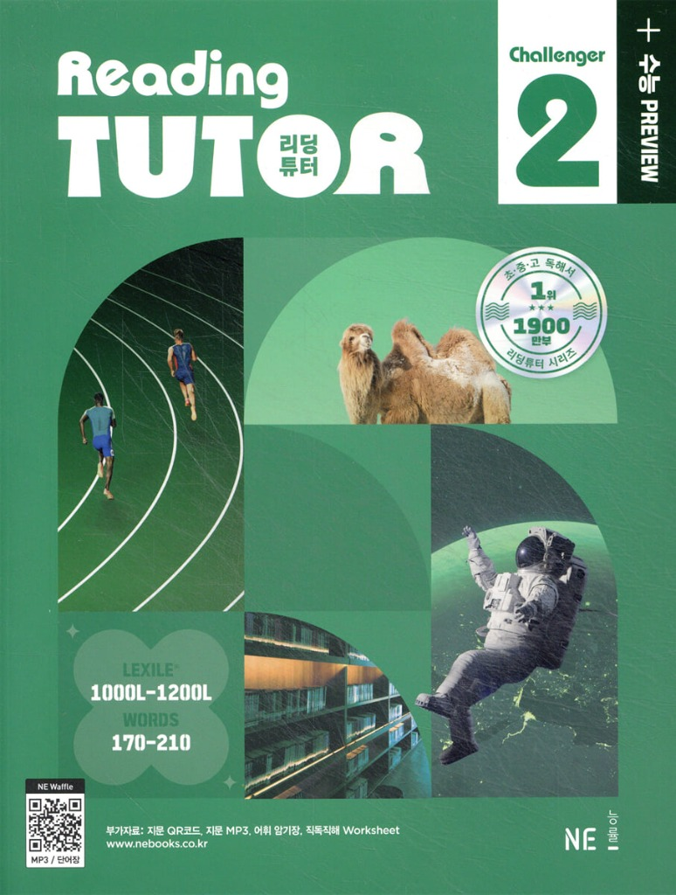
리딩튜터 챌린저 2
Lexile 1000L ~ 1200L · 고2 모의 및 심화 독해
현재 수록 완료 ✓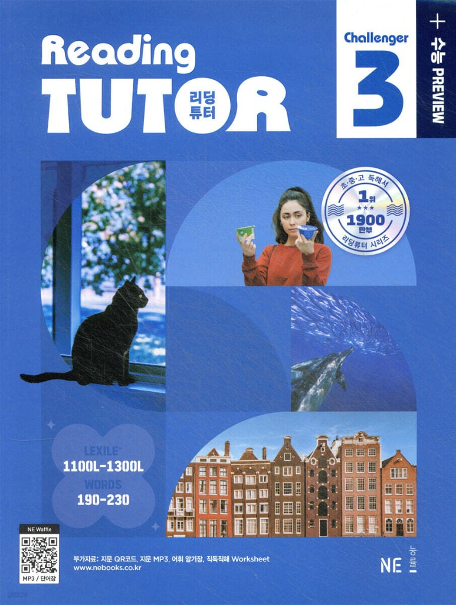
리딩튜터 챌린저 3
Lexile 1100L ~ 1300L · 수능 1등급 킬러 독해 어휘
현재 수록 완료 ✓Oxford 3000™ / 5000™ 공식 선정 핵심 어휘
영국 옥스퍼드 대학 출판부 공식 지정, 전 세계 영어 화자가 가장 먼저 마스터해야 하는 필수 골드 스탠다드
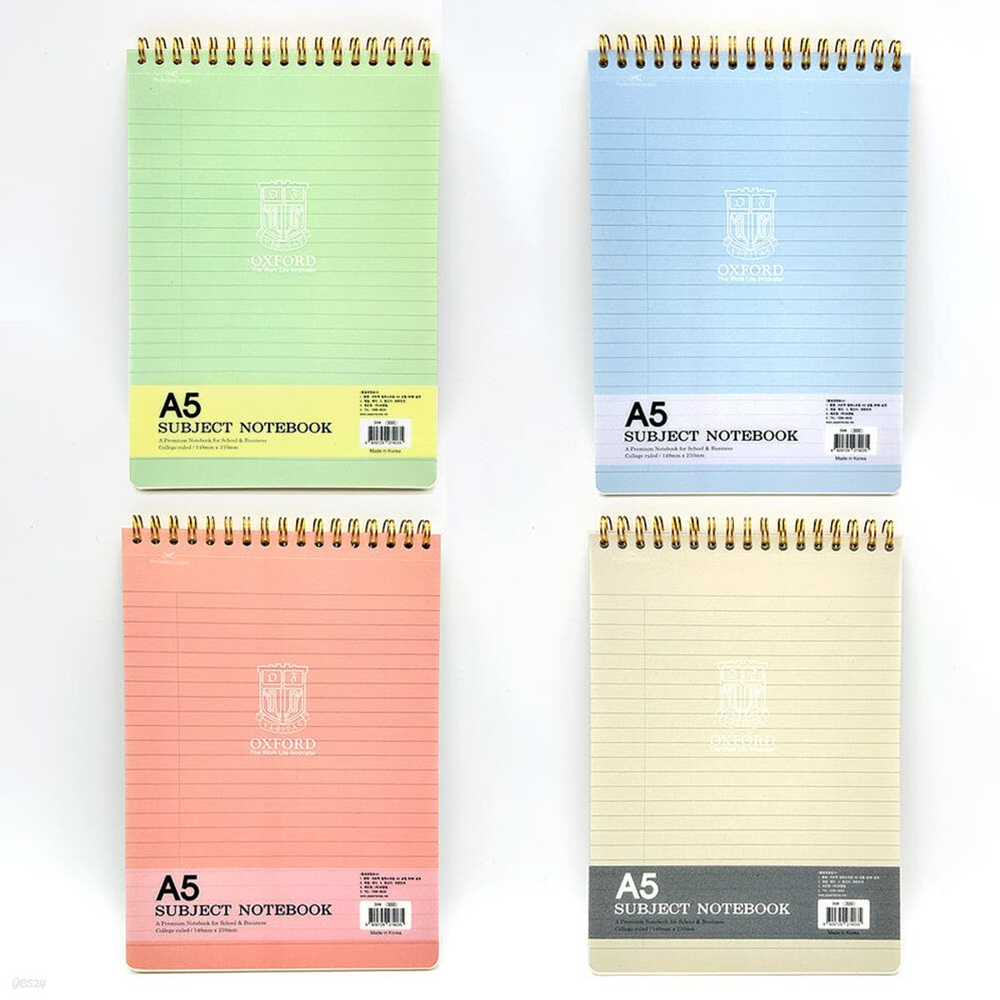
Oxford 3000 & 5000
CEFR A1 ~ C1 표준 공인 등급 매핑
CEFR 국제 표준 레벨 체계 완전 연동
A1(기초)부터 B2(독립 구사), C1(고급 학술)까지 옥스퍼드 코퍼스 20억 단어 빅데이터 기반으로 가장 빈도와 중요도가 높은 3,000~5,000단어를 완벽 추출하여 학습합니다.
💡 추천 학습자
토플, IELTS, 외고·국제고 진학, 해외 유학 및 수능 어휘의 든든한 밑거름을 쌓고자 하는 초중고 모든 학생.
National Geographic Learning Pathways 3rd Edition (1~4)
내셔널 지오그래픽 공식 학술 독해·비판적 사고 교재, 영재원 및 특목고 최우선 추천 코스
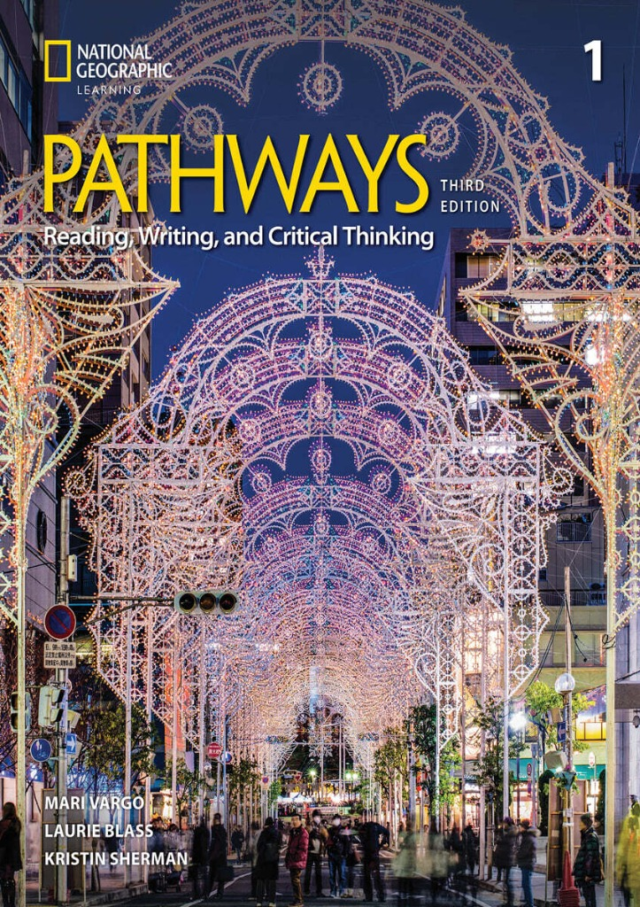
Pathways Level 1
Reading & Writing
현재 수록 완료 ✓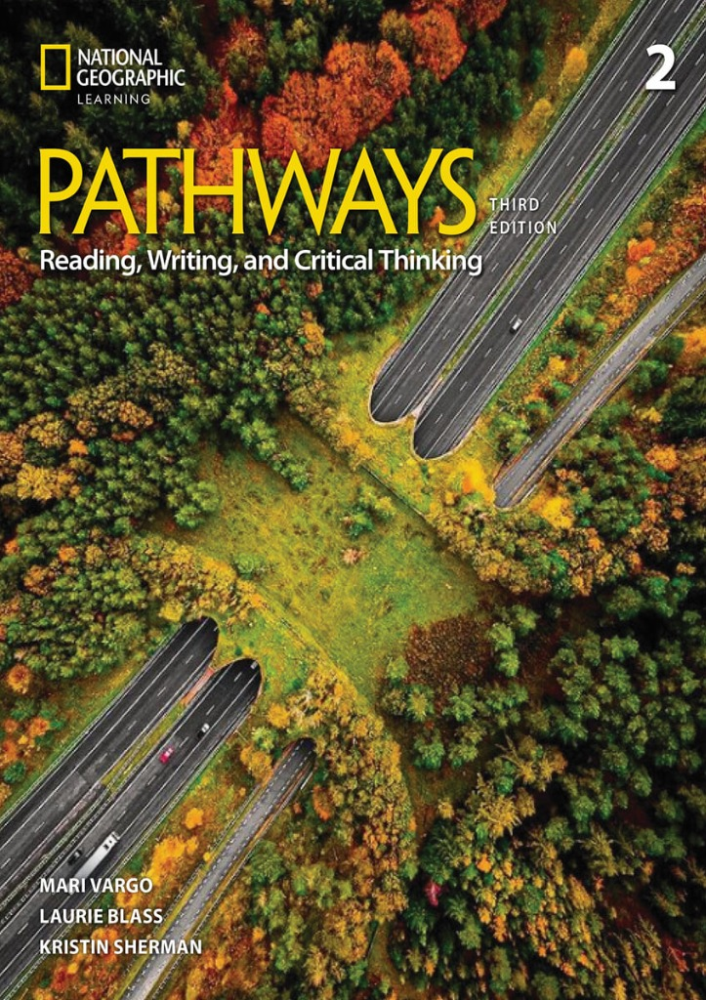
Pathways Level 2
Reading & Writing
현재 수록 완료 ✓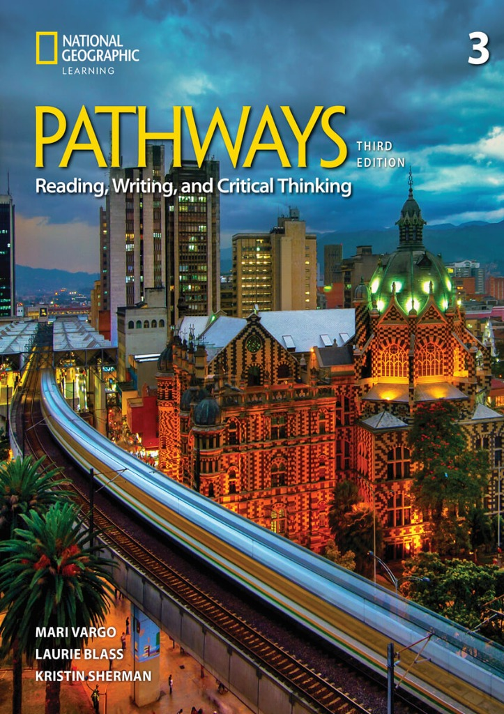
Pathways Level 3
Reading & Writing
현재 수록 완료 ✓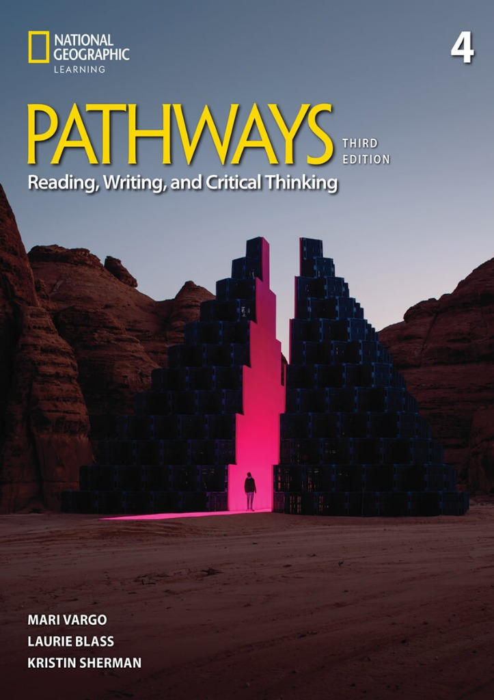
Pathways Level 4
Reading & Writing
현재 수록 완료 ✓베리타스 오리지널 10개 전 시리즈 완벽 라인업
유명 시판 교재 외에도, 학생들의 실제 내신 시험 및 취약점, 최신 트렌드를 분석하여 자체 개발한 10대 오리지널 단어장이 모두 탑재되어 있습니다.
베리타스 마스터 6,000 보카
초등 고학년 기초부터 영재·외고·토플 수준까지 10단계로 정밀 세분화된 종합 마스터 어휘 코스입니다.
중등 6개 학기 내신 기출 어휘
전국 주요 중학교 교과서 5종 및 실제 중간/기말 지필평가 출제 빈출 어휘를 학기별로 압축 탑재했습니다.
프리미엄 5대 시즌 단어장
미드 슬랭 500, TED 강연 600, 에세이 라이팅 600, 중학 첫걸음 1,000, 토익 RC 1,500 단어로 구성된 프리미엄 패키지.
수능 다의어 & 혼동 어휘 / 테크 AI
수능 33~34번 빈칸 추론을 가르는 핵심 다의어와 혼동 어휘, 최신 기술 및 생성형 AI 트렌드 단어를 정복합니다.
미국 교과서 학술 어휘 (Tier 2 Academic)
사회, 과학, 역사 등 미국 현지 정규 교과서에 빈번히 등장하는 범교과 학술 어휘(analyze, interpret 등)를 체계화.
중학·수능 필수 숙어 & 찐 속담
글자 그대로 해석하면 틀리는 영어 관용 표현과 영미 문화권 속담을 직관적인 예문과 함께 습득합니다.
실전 생존 여행 시추에이션
공항 입국심사, 호텔 체크인, 레스토랑 주문, 길 찾기 등 해외 현지에서 즉시 입에서 터져 나오는 실전 회화 표현.
원어민 감정·심경 묘사 마스터 (50단어)
수능 영어 19번 심경·분위기 파악 문항에 출제되는 모든 감정 형용사(indifferent, apprehensive 등)를 총망라.
영미 명작 문학 & 소설 클래식 어휘
위대한 개츠비, 1984, 오만과 편견 등 세계적 고전문학에서 발췌한 품격 높은 어휘와 수사적 표현 수록.
나만의 AI 맞춤 생성 단어장
내가 퀴즈에서 자주 틀린 오답과 북마크한 단어만을 인공지능이 분석하여 자동으로 조합해주는 개인화 단어장.
학년·목표별 베리타스 4단계 추천 학습 로드맵
초5 ~ 중1 기초 다지기
어휘 근육 생성 & 기초 내신
- 중학 첫걸음 1,000
- 중1 1·2학기 내신 어휘
- Oxford 3000 (A1~A2)
중2 ~ 중3 고득점 도약
중등 심화 & 수능 선행
- 능률 중학 고난도
- 리딩튜터 챌린저 1
- 중등 2·3학년 내신 어휘
고1 ~ 고3 1등급 완성
수능 빈출 & 킬러 문맥
- 리딩튜터 챌린저 2 & 3
- 수능 1등급 킬러 다의어
- 능률 고등 기본 & 수능 필수
영재·특목 & 아카데믹
원서 독해 & 학술 논문
- Pathways 3rd (1~4)
- Oxford 5000 (B2~C1)
- 미국 교과서 학술 어휘 Tier 2